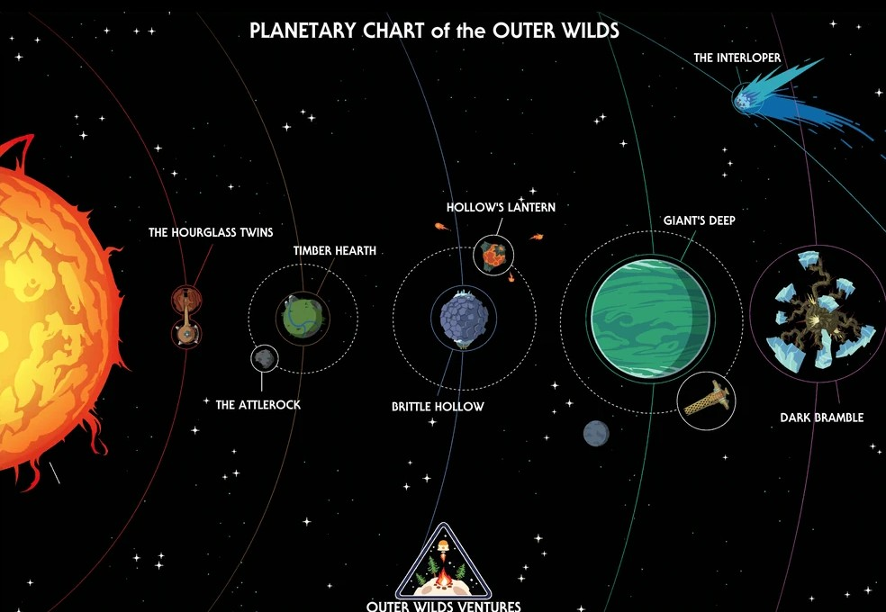

Sobre o jogo

- Sistema solar em loop temporal de 22 minutos
- Exploração espacial livre, sem tutoriais explícitos
- Nave espacial construída pelos Hearthianos
Planetas
| Planeta | Característica |
|---|---|
| Timber Hearth | Planeta natal dos Hearthianos, coberto de florestas |
| Brittle Hollow | Planeta gelado que se desintegra e cai em um buraco negro |
| Giant's Deep | Planeta oceânico com tornados que levam à sua ilha núcleo |